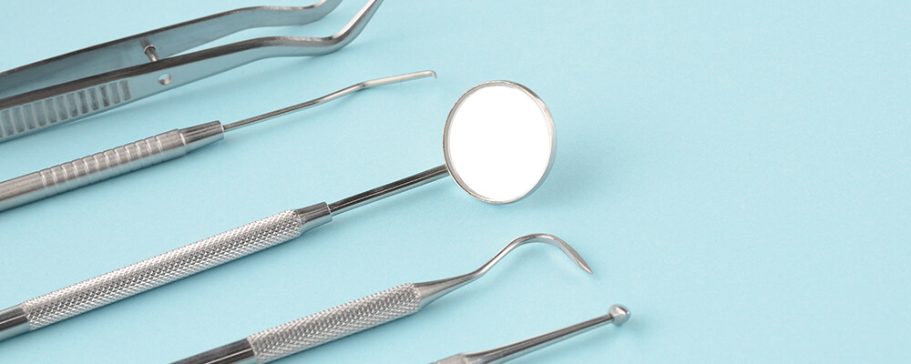
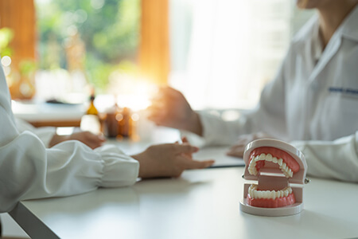
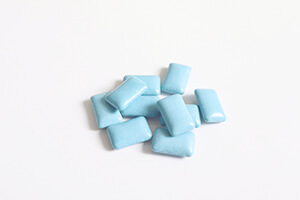
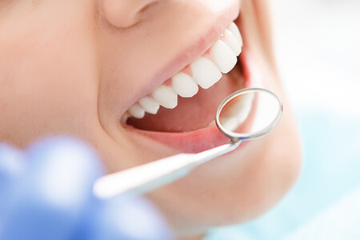
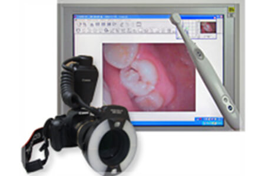
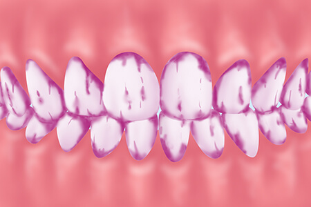
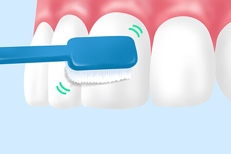
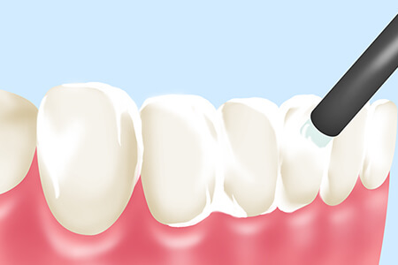
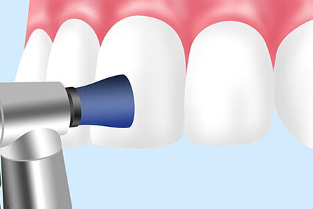

- TOP
- 予防処置

歯科医院には「歯が痛くなってから行く」というのがこれまでの一般的な考え方です。しかし、お口のトラブルを未然に防ぎ、生涯にわたって健康な歯を維持するのに有効なのは、「歯が痛くなる前から、そして痛くならないように」歯科医院に通うことです。
虫歯治療では、原因菌に汚染された部分を削り、溶けたり削ったりしたところを人工歯で補います。これによって虫歯の進行は止められますが、失った歯質は回復しないので、元の健康な状態には戻せません。悪化を止めるために必要な治療ですが、人体への負担はゼロではありませんので、再発・再治療をくり返すとダメージが蓄積して、やがては大切な歯を失うことにつながります。
いっぽう、毎日のセルフケアをしっかり行い、定期的に歯科医院での口腔管理や歯のクリーニングを受けるのは、トラブルを未然に防ぐのに有効です。お口の健康を保ちやすいとともに、たとえ定期検診で虫歯や歯周病が見つかっても早期発見・早期治療につながり、歯やお口へのダメージや痛みによる身体的負担が小さくて済みます。予防処置を行うことによって、歯の寿命を延ばすことができるのです。そのため、大阪府高槻市の歯医者「河原歯科クリニック」では、定期検診を通した予防やメインテナンスに力を入れています。
専任の歯科衛生士が健康をサポートします
「河原歯科クリニック」には日本歯周病学会の認定歯科衛生士や、日本歯科保存学会の認定歯科衛生士が在籍しています。また、さらなる研鑽のため、勉強会やセミナーに積極的に参加してレベルアップをはかっています。勉強会やセミナーで得た知識をスタッフへ共有することも欠かしません。
当クリニックは担当歯科衛生士制です。いつも同じ歯科衛生士が担当するので、コミュニケーションが取りやすく相互理解も深まるうえ、今までの治療のヒストリーを把握することで予防につなげやすくなります。担当歯科衛生士は知識と実績をいかし、長期的に口腔内の健康を守るための予防計画をご提案します。
二人三脚でお口の健康をサポートできる定期検診を活用していただければ、ちょっとした変化にも気づきやすく、予防につながります。すぐに歯科医師と情報を共有すれば、応急処置や経過観察の判断も可能です。すでに発症していたとしても、早期発見・早期治療につなげられれば、比較的かんたんな治療で済むのです。
歯周病予防のスペシャリスト～日本歯周病学会の認定歯科衛生士～
日本の成人の約8割が、予備軍またはすでに発症しているといわれるほど蔓延している歯周病は、治りにくく再発しやすい病気です。その歯周病の治療や予防のために、日本歯周病学会の認定歯科衛生士制度が平成17年に発足しました。歯周病治療の深い知識と専門的な技術を得て、進行段階に合わせた的確で効率的な治療や施術を可能にし、長期間にわたって健康管理に貢献できる歯科衛生士を育成するのが目的です。
この認定資格は、通算3年以上歯周治療に携わり、教育研修を30単位以上取得したうえ、5症例の歯周病患者への治療実績を提示し、そのうちの1症例の口頭試問に合格した歯科衛生士に与えられます。当クリニックには、歯周病予防のスペシャリストともいえる資格保有者が在籍し、患者様のお口の健康をサポートします。
虫歯予防のスペシャリスト～日本歯科保存学会の認定歯科衛生士～
虫歯も身近なお口のトラブルで、発症すると再発しやすい病気です。しかし、口腔ケアによる予防も可能です。患者様の虫歯予防をサポートするため、公益社団法人日本歯科衛生士会によって、「認定歯科衛生士（う蝕予防管理）」が発足されました。「う蝕」とは虫歯のことで、予防のための専門的な知識と臨床技能をもつ歯科衛生士の育成と、歯科医療の水準向上、患者様の健康増進につなげることを目的としています。歯科保存は『天然歯をできるだけ保存する』ことが目的ですので、予防にも力を入れている分野です。当クリニックには、虫歯予防のスペシャリストともいえる資格保有者が在籍しています。
コミュニケーションによる信頼関係が大切です

虫歯も歯周病も感染症で、生活習慣病ともいわれています。有効な予防処置のためには患者様の口腔内環境を整えるだけでなく、生活習慣も考慮する必要があるのです。飲食のクセや生活のリズム、睡眠時間や喫煙習慣、ストレスを受けやすい環境かどうかなど、何気ない会話には”予防”につながるヒントがあります。そのため、患者様とのコミュニケーションを大切にして信頼関係を得て、何でも話しやすい雰囲気をつくることも大切です。
そのため、当クリニックでは担当歯科衛生士制を採用し、いつも同じ歯科衛生士が担当します。お悩みの相談をしやすいだけでなく、お口の変化に気づきやすいこともメリットです。定期検診では、「毎日の口腔ケアでここはきれいにできているけれど、ここは汚れが残りやすいです」などと必要なことを伝えて、口腔ケアの意識を高め、モチベーションを保っていただくことも大切にしています。
普段の生活で気をつけること
虫歯や歯周病の直接の原因は細菌です。毎日のブラッシングで、この細菌の栄養源となる食べかす（糖分）や細菌の巣であるプラークを除去できれば、トラブルの予防につながります。しかし、ご自宅でのセルフケアだけでは、歯と歯の間や歯と歯ぐきの溝の汚れまで落としきれないものです。その汚れは、歯科医院でのプロフェッショナルケアできれいにしましょう。
治療後はメインテナンスしましょう

治療を受けた歯は、元の健康な歯よりも病気が再発しやすくなっています。せっかく時間とお金をかけて治した歯ですので、しっかりメインテナンスをして健康状態を保ちましょう。
キシリトールを取り入れましょう

「キシリトール」は虫歯菌の栄養源となる糖を含まない甘味料なので、キシリトール入りのシュガーフリーのお菓子なら虫歯の心配がありません。おすすめは、キシリトール入りのガムです。ガムを噛むと分泌される唾液にはお口の自浄作用があり、歯の再石灰化（溶け出した歯のミネラル分を再吸収する作用）を促します。「おやつが食べたい」と思ったときは、キシリトール入りのおやつを活用してはいかがでしょうか？
予防メニュー
定期検診
-

定期検診では担当歯科衛生士が口腔内を総合的にチェックし、歯をクリーニングいたします。いつも同じ衛生士が行いますので、患者様のお口のちょっとした変化も見逃しません。定期的に検診を受けてくだされば、すでに虫歯や歯周病にかかっていても、早期発見・早期治療につながります。
口腔内写真 治療前・治療終了後
-

口腔内写真を撮影し、画像を見ながらお口の中の異常をチェックします。肉眼では死角に入り見えにくい部分でも、口腔内写真を用いれば細部までしっかり確認できます。治療前後で見比べると、お口の健康をご実感いただけるはずです。
染め出し
-

いつも通りのブラッシングのあと、プラークだけを赤く染め出す液をお口に含んでいただきます。これによって磨き残し部分が視覚化されるので、ブラッシングのクセを患者様自身にもはっきりお分かりいただけます。
ブラッシング指導
-

染め出しの結果をふまえて、患者様のお口の状態に合わせた効果的なブラッシング方法を指導します。歯ブラシの当て方や角度、強さなどをお伝えしますので、毎日の正しいブラッシングにお役立てください。
フッ素塗布
-

歯質を強化する作用があるフッ素を、歯の表面に塗布する処置です。歯の再石灰化を促すことが期待でき、定期的な処置が虫歯になりにくい口腔内環境の維持につながります。
PMTC
（プロフェッショナル・メカニカル・トゥース・クリーニング）
-

歯科医院で専用機器を使って行う、専門的な歯のクリーニングです。毎日のブラッシングでは落としきれない汚れを徹底的に取り除くので、お口のトラブルや口臭を予防したり、軽い色素沈着を除去したりすることが期待できます。